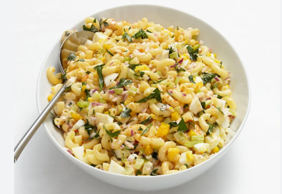

A I E R A ' S R E C I P E B O O K
Macroni
Ingredients
- Macaroni pasta
- Butter
- All-purpose flours
- Milk
- Cheddar cheese (grated)
- Salt
- Black pepper
Measurements
- Macaroni pasta :2 cups
- Butter : 2 tablespoons
- All-purpose flour : 2 tablespoons
- Milk : 2 cups (preferably whole milk)
- Cheddarcheese : 2 cups
- Salt : 1/2 teaspoon
- Black pepper : 1/4 teaspoon
Preparation
Bring a pot of salted water to a boil. Add the macaroni and cook according to the package instructions (about 7–8 minutes for al dente).
Drain the pasta and set aside.
In a large saucepan, melt the butter over medium heat.
Add the flour and whisk continuously for 1–2 minutes to form a roux (it should look like a paste).
Gradually pour in the milk while whisking to avoid lumps. Continue to whisk until the mixture thickens (about 3–5 minutes).
Reduce the heat to low and add the grated cheese, stirring until it melts and the sauce is smooth.
Season with salt, black pepper, and any optional seasonings like paprika or garlic powder.
Add the cooked macaroni to the cheese sauce and stir until the pasta is fully coated.